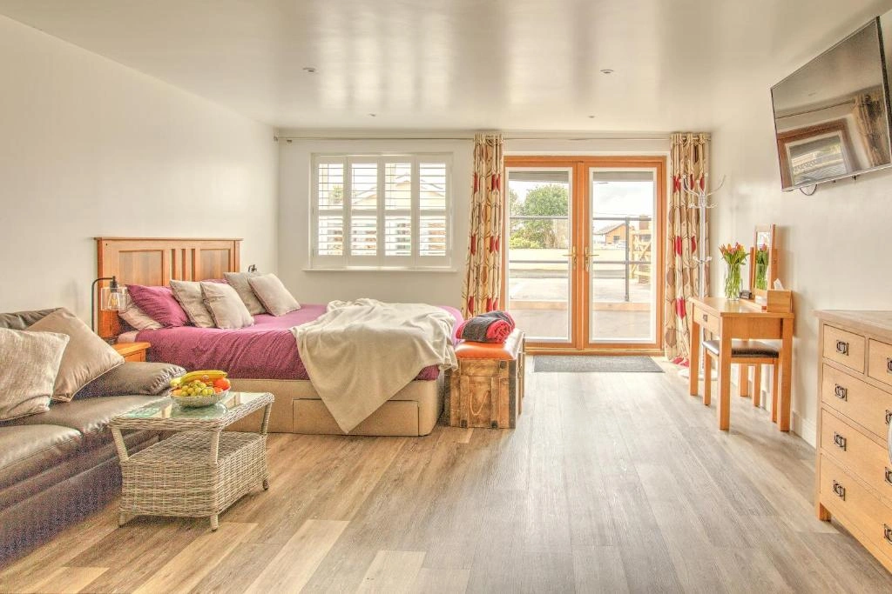
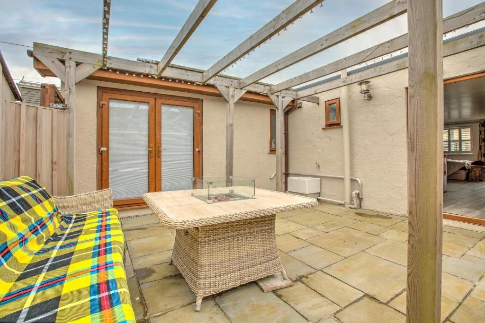

Newquay
Fistral surf, Blue Reef Aquarium and harbour front fish & chips all found in this seaside town.
Crantock, Cornwall TR8 5RY
A self-catered annexe in Crantock village, near Newquay, Cornwall


The Studio
43 The Annexe is a thoughtfully kept studio with everything you need for an easy Cornish getaway. Cook a slow breakfast, take the lane down to the beach, come back salty and sleepy and put the kettle on.
A comfortable king sized bed for restful nights after long beach days.
Self-catering with everything you need including tea, coffee and milk on arrival.
Free fast Wi-Fi throughout and reserved off-street parking.
A sheltered outdoor spot for morning coffee or a glass of something stronger in front of the firepit in the evening.
Both hot and cold air conditioning for your comfort.
Inside the Annexe
Browse our gallery by swiping, clicking or simply letting it play.
What's Included
A thoughtfully stocked studio with hairdryer, fresh linen, towels and free parking, the small things are taken care of.
"This place is fantastic. Exceptionally clean, modern one of the best I've stayed at. Alex is a fantastic host really enjoyed coming back here arfter walking along the Cornish coast"
The Village
Crantock is a small conservation-area village on Cornwall's north coast, just across the Gannel Estuary from Newquay. Although Newquay appears very close on a map, the estuary means it's a surprisingly long walk to get there.
At its heart sit three local pubs — The Bowgie Inn with its clifftop view over Crantock Bay, and the village's own Old Albion, a thatched, low-beamed local serving honest Cornish pints since the 1700s and situated on the other side of the road from the Old Albion, the family friendly Cornishman pub opposite.
While we enjoy plenty of beautiful days, a dry day in Cornwall is never guaranteed and the Atlantic can occasionally remind us who's in charge. Most notably, Storm Goretti in 2026 dramatically reshaped Crantock Beach, adding another chapter to the coastline's history.
Weather
Open-Meteo weather for Crantock, Cornwall.
The wide, west-facing beach backed by dunes, sheltered by Pentire Head is perfect for beach days, walks and surfing.
5 min walkCoffee, newspapers, Cornish pasties.
3 min walkA historic freehold pub serving great food and drink all year round.
4 min walk13th-century church at the village centre.
5 min walkAt low tide, walk the tidal footbridge across the Gannel to Crantock Beach — one of Cornwall's most quietly beautiful crossings.
Hidden at the cliffs of Piper's Hole on Crantock Beach: a love poem and carved horse, etched in 1940 by a heartbroken Joseph Prater.
The South West Coast Path runs right through. West to Polly Joke and Holywell, east to Pentire Point and Fistral.
Beyond the Village
Crantock sits between Cornwall's surf coast and inland valleys. A 30 minute drive opens up most of the duchy.
Interactive map
The map and the cards below stay linked, so you can browse either way.
Fistral surf, Blue Reef Aquarium and harbour front fish & chips all found in this seaside town.
Rick Stein's seafood town, traditional pasties, the Camel Trail and a ferry across to Rock.
White sands and ice cream, Tate St Ives, cobbled artist lanes and the Barbara Hepworth Garden.
The world-famous biomes near St Austell with the rainforest and Mediterranean in one location.
The dramatic stack strewn beach the giants of Cornish legend used as stepping stones.
Cornwall's cathedral city with independent shops, Lemon Street Market, Hall for Cornwall, and Cornwall Museum and Art Gallery.
Atlantic cliffs, an Arthurian castle and the legend of the north coast.
Restored Victorian gardens with jungle valleys, productive gardens and a sleeping giant.
Find Us
Tucked into a quiet residential lane in the heart of Crantock village. The pin on the map marks our front door — beach, pubs and the village shop are all an easy stroll from here.
43 The Annexe, Crantock, Cornwall, TR8 5RY
Ready when you are
Direct messages warmly welcomed or book us through Booking.com for an instant confirmation.